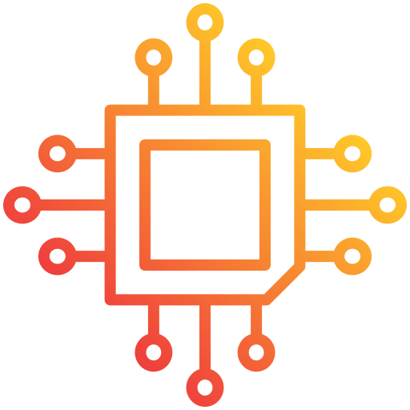

Прошивка

Прошивка дозволяє значно покращити роботу автомобіля, оптимізувати енергоспоживання та забезпечити нові функціональні можливості. Наші фахівці виконують встановлення оновлень програмного забезпечення, що дозволяє вам користуватися найсучаснішими технологіями.
- Оновлення програмного забезпечення для поліпшення роботи систем.
- Оптимізація роботи батареї та зарядних систем.
- Забезпечення нових функцій та можливостей авто.
- Індивідуальні налаштування для кожного користувача.
Наші професіонали працюють з офіційними програмними версіями та дотримуються всіх стандартів безпеки під час оновлення прошивки. Ми пропонуємо надійний та ефективний сервіс, щоб ваш автомобіль працював на найвищому рівні.
- Інсталяція найсвіжіших оновлень без шкоди для систем авто.
- Налаштування функцій за бажанням власника.
- Діагностика та оптимізація програмного забезпечення.
- Підтримка постійного доступу до нових оновлень.
